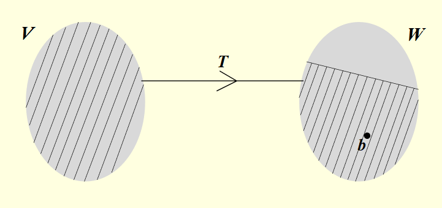
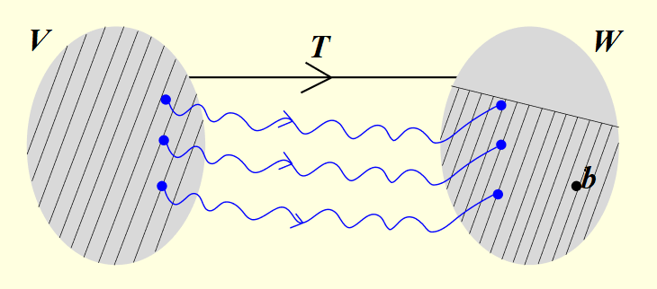

Notation:
- Linear map equation: T(x)=b
- V, W are finite dimensional vector spaces
- T:V→W is a linear transformation
- b ∈ W
Consistency (Existence of solution):

- T(x) = b is consistent if
or
or
- T(x) = b is consistent iff
Uniqueness of solution (if the solution exists):

- Let T(x) = b be consistent. Then its solution is uniqe iff